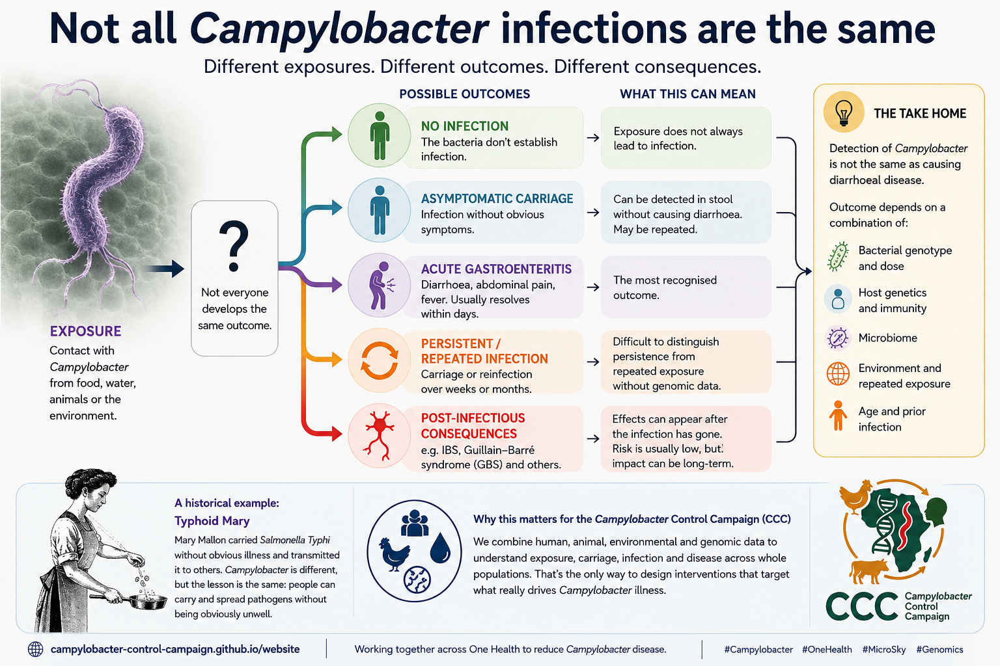

The question
Exposure is not the same as infection — and infection is not the same as disease.
We often talk about “Campylobacter infection” as though it were a single event. In reality there are several steps: exposure, colonisation or infection, symptoms, clearance or persistence, and sometimes longer-term consequences. People can stop at very different points along that pathway.

Sometimes infection is clinically obvious
In many high-income settings, Campylobacter is most familiar as an acute gastroenteritis: diarrhoea, abdominal pain and fever that usually resolves within days. These clinically apparent cases are important, but they represent only one part of the organism’s biology.
Sometimes there are no obvious symptoms
In high-burden settings, repeated detection without diarrhoea is common. Our work in the Peruvian Amazon found that symptomatic and asymptomatic C. jejuni infections were distributed across diverse lineages rather than being explained by a single “asymptomatic” bacterial lineage. That points to an important role for host and contextual factors in determining whether infection produces disease.
This creates a basic epidemiological problem: finding Campylobacter in a stool sample does not automatically mean that it caused the diarrhoeal episode occurring at that time.
Exposure ≠ infection ≠ disease.
The historical lesson of “Typhoid Mary”
Mary Mallon is a famous historical example of asymptomatic carriage. She carried Salmonella Typhi without obvious illness and transmitted it to others. Campylobacter is biologically and epidemiologically very different, but the broader lesson remains useful: pathogen carriage and clinical disease are not synonymous.
No diarrhoea does not necessarily mean no biological effect
Asymptomatic or subclinical infection may still matter. Longitudinal work in Peruvian children has associated both symptomatic and asymptomatic Campylobacter infection with poorer weight gain, while more severe symptomatic episodes were associated with larger growth deficits. This does not mean every asymptomatic detection causes measurable harm, but it does show why “no diarrhoea” should not automatically be treated as “no effect”.
Carriage can persist — or infection can keep coming back
Repeated positive samples may represent prolonged carriage, repeated re-exposure or reinfection with different strains. Without strain-level information, those processes can be difficult to distinguish.
This is where genomic data become particularly useful. If repeated samples contain closely related genomes, that supports persistence; genetically distinct isolates instead suggest repeated acquisition. Genomics therefore adds a temporal and population-level dimension that pathogen detection alone cannot provide.
The consequences can appear after the infection has gone
For a minority of people, the story does not end when acute gastroenteritis resolves. Campylobacter jejuni is an important antecedent infection for Guillain–Barré syndrome (GBS), a rare autoimmune neuropathy.
GBS is also a striking example of why bacterial strain biology matters. Some C. jejuni lipooligosaccharide structures resemble gangliosides in human peripheral nerves. The resulting immune response can cross-react with host nerve structures — a classic example of molecular mimicry.
A more common longer-term complication is post-infectious irritable bowel syndrome (PI-IBS). In a large cohort of culture-confirmed Campylobacter cases, 21% of respondents without pre-existing IBS met criteria for PI-IBS six to nine months later.
So what determines the outcome?
Why does one exposure produce no symptoms, another acute diarrhoea, and another a lasting complication? There is unlikely to be a single answer. Outcome probably reflects an interaction between the bacterium, host genetics and immunity, the microbiome, age and prior exposure, and the surrounding environment.
In other words: pathogen + host + context.
Why this matters for the Campylobacter Control Campaign
Simply asking “is Campylobacter present?” is not enough. We need to know which Campylobacter, in whom, from where, for how long, and with what consequence.
That is one reason the Campylobacter Control Campaign combines human, animal and environmental sampling with epidemiology and genomics. The goal is not merely to detect the organism, but to understand the pathways that turn exposure into carriage, disease or longer-term consequences — and then use that knowledge to design interventions that target the processes that actually matter.